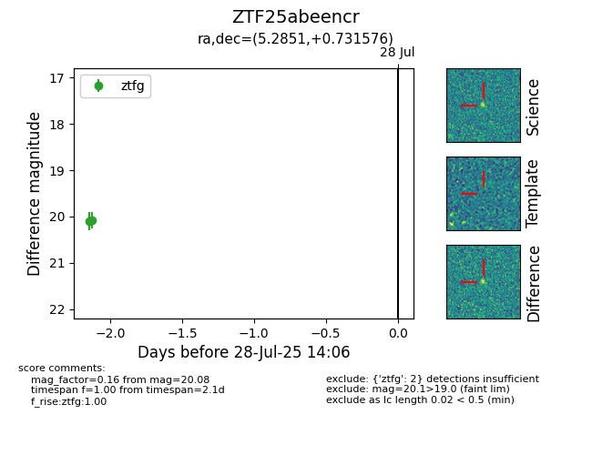

Target ZTF25abeencr at 2025-07-28 14:06, see:
FINK: fink-portal.org/ZTF25abeencr
Lasair: lasair-ztf.lsst.ac.uk/objects/ZTF25abeencr
ALeRCE: alerce.online/object/ZTF25abeencr
alt names
ZTF25abeencr (ztf,fink)
coordinates:
equatorial (ra, dec) = (5.2851,+0.73158)
galactic (l, b) = (107.0526,-61.20260)
photometry
last ztfg=20.08
2 ztfg detections
